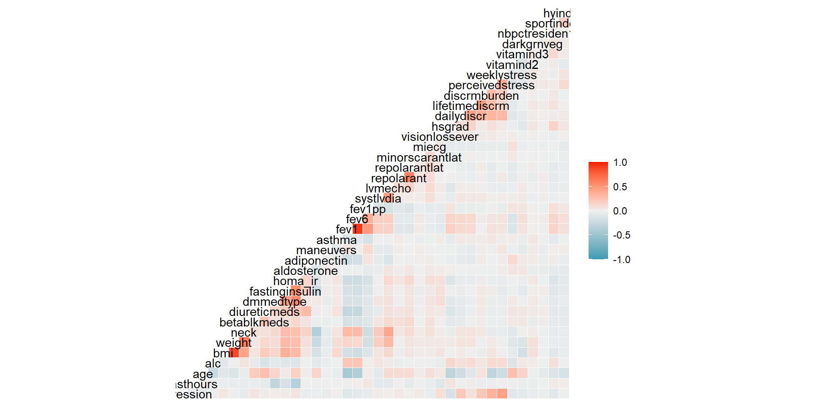
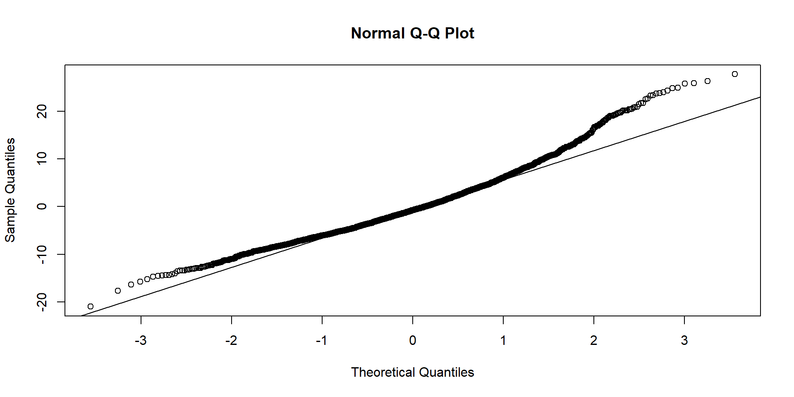

LASSO, Ridge Regression, and Elastic Net Regularization
Introduction / Linear Regression Overview
Regression is the predicting or learning of numerical features in statistics and machine learning which allows for data driven decisions over guesswork.
Simple linear regression is the relationship between one dependent variable and one independent variable to create a linear model that can be used to predict future outcomes.
Multilinear regression is more complex with the addition of more independent variables.
An issue can arise as the number of independent variables becomes too high resulting in less predictability which can be solved with regularization.
What Is Regularization?
The process managing the independent variables in a way that maintains predictability.
Regression models that contain too many independent variables can have an issue with the linear model not fitting or predicting well.
Overfitting the model is too close to the data provided which can cause a problem with different data sets and predicting future values
Underfitting the model is not close enough to the current data to determine accurate predictions
To regularize models, we must manage the number and impact of independent variables. We can reduce the coefficients of the variables which decreases the impact of less important variables or eliminate the less impactful variables all together.
Regularized Regression Methods
Three regularized regression methods are
Ridge, Elastic Net, and LASSO.
Ridge Regression
Reduces the impact of the variables that are not as important in the prediction of the model by reducing the value of the coefficients to near zero
Can manage data sets in which the number of independent variables is greater than the number of observations in the data set. ( \(p>n\))
Does not preform variable selection as all independent variables remain the model
Ridge regression uses a variable \(\lambda _{Ridge}\)which is the determining value in the reduction the coefficients
LASSO
Least Absolute Shrinkage and Selection Operator
Performs variable selection eliminating independent variables by reducing their coefficients to zero
If collinearity exists, only one independent variable is kept in the model and the rest are discarded by reducing their coefficients to zero
- This can be a problem is data sets with a lot of collinearity
Cannot keep more predictors than observations therefore only recommended for data sets where the number of predictors is less than the number of observations (\(p<n\))
LASSO uses a variable we will call \(\lambda _{LASSO}\) to eliminate the coefficients
Elastic Net Regularization
Determined by a sliding scale that exists between ridge and LASSO by selecting an \(\alpha\) between 1 and 0
- \(\alpha=0\) indicates ridge regression and \(\alpha=1\) indicates LASSO
Can perform variable selection
Can work when the number of independent variables is greater than the number of observations in the data set. (\(p>n\))
Elastic net uses a balance of both the \(\lambda _{Ridge}\) and \(\lambda _{LASSO}\)
Jackson Heart Traditional OLS Regression
Jackson Heart Study (JHS) Data
JHS Visit 1 dataset of 2653 observations and 198 variables
For this example, we’ll model the Total Depressive Symptoms Score (depression) as the Dependent variable (y).
Call:
lm(formula = depression ~ ., data = LM_Data)
Residuals:
Min 1Q Median 3Q Max
-20.4277 -4.3222 -0.7683 3.5879 26.5590
Coefficients:
Estimate Std. Error t value Pr(>|t|)
(Intercept) 1.179e+01 2.504e+00 4.710 2.60e-06 ***
fasthours 4.258e-02 4.184e-02 1.018 0.30892
age -9.298e-03 2.092e-02 -0.444 0.65683
alc -6.498e-01 2.656e-01 -2.447 0.01447 *
bmi -2.750e-02 9.015e-02 -0.305 0.76034
weight 1.447e-02 3.035e-02 0.477 0.63365
neck -8.299e-02 5.616e-02 -1.478 0.13961
betablkmeds 1.114e+00 4.135e-01 2.694 0.00710 **
diureticmeds -3.010e-01 3.082e-01 -0.977 0.32884
dmmedtype 5.354e-02 2.875e-01 0.186 0.85228
fastinginsulin 2.660e-03 1.368e-02 0.195 0.84578
homa_ir 6.290e-02 4.183e-02 1.504 0.13279
aldosterone -6.356e-02 3.132e-02 -2.029 0.04251 *
adiponectin -1.265e-04 3.875e-05 -3.265 0.00111 **
maneuvers -2.561e-01 8.923e-02 -2.871 0.00413 **
asthma -3.586e-01 2.701e-01 -1.328 0.18439
fev1 -2.476e+00 8.366e-01 -2.960 0.00310 **
fev6 8.765e-01 4.569e-01 1.919 0.05515 .
fev1pp 3.771e-02 1.853e-02 2.036 0.04189 *
systlvdia 2.188e-02 3.237e-02 0.676 0.49918
lvmecho 8.973e-03 4.363e-03 2.057 0.03983 *
repolarant 1.794e+00 7.903e-01 2.270 0.02331 *
repolarantlat -1.188e+00 8.000e-01 -1.485 0.13765
minorscarantlat 2.424e+00 1.223e+00 1.983 0.04751 *
miecg -1.948e+00 8.510e-01 -2.290 0.02212 *
visionlossever 3.335e+00 7.043e-01 4.735 2.31e-06 ***
hsgrad -2.894e+00 3.901e-01 -7.420 1.57e-13 ***
dailydiscr 4.442e-01 1.484e-01 2.995 0.00277 **
lifetimediscrm -3.244e-01 7.311e-02 -4.437 9.51e-06 ***
discrmburden 1.294e+00 1.928e-01 6.709 2.39e-11 ***
perceivedstress 3.535e-01 3.420e-02 10.338 < 2e-16 ***
weeklystress 3.525e-02 1.789e-03 19.702 < 2e-16 ***
vitamind2 -1.508e-01 3.408e-02 -4.423 1.01e-05 ***
vitamind3 -4.409e-02 2.217e-02 -1.989 0.04683 *
darkgrnveg -4.497e-01 1.756e-01 -2.560 0.01051 *
nbpctresiden1mi -2.677e+00 1.172e+00 -2.284 0.02248 *
sportindex -1.042e-01 1.070e-01 -0.974 0.33016
hyindex -6.040e-01 2.118e-01 -2.852 0.00438 **
---
Signif. codes: 0 '***' 0.001 '**' 0.01 '*' 0.05 '.' 0.1 ' ' 1
Residual standard error: 6.437 on 2615 degrees of freedom
Multiple R-squared: 0.3222, Adjusted R-squared: 0.3126
F-statistic: 33.59 on 37 and 2615 DF, p-value: < 2.2e-16
JHS: Heavy Tails/Nonparametric
Correlation Matrix heat map:high multicollinearity for JHS
- 2 or more predictor variables strongly linearly dependent
- leads to overfitting and low prediction accuracy

JHS Variance Inflation Factor (VIF) Scores : Multicollinearity
VIF Tolerance
fasthours 1.212682 0.82461824
age 3.863775 0.25881422
alc 1.127314 0.88706467
bmi 25.404431 0.03936321
weight 25.781836 0.03878700
neck 2.805165 0.35648530
betablkmeds 1.116920 0.89531958
diureticmeds 1.341139 0.74563479
dmmedtype 1.677414 0.59615581
fastinginsulin 1.787363 0.55948348
homa_ir 2.135974 0.46817042
aldosterone 1.181316 0.84651321
adiponectin 1.252232 0.79857386
maneuvers 1.047083 0.95503367
asthma 1.060646 0.94282134
fev1 20.647705 0.04843153
fev6 8.368320 0.11949830
fev1pp 5.982210 0.16716230
systlvdia 1.380383 0.72443637
lvmecho 1.650663 0.60581711
repolarant 1.630613 0.61326636
repolarantlat 1.685128 0.59342657
minorscarantlat 1.035076 0.96611274
miecg 1.074841 0.93037051
visionlossever 1.029635 0.97121787
hsgrad 1.184941 0.84392421
dailydiscr 1.440257 0.69432051
lifetimediscrm 1.509734 0.66236828
discrmburden 1.453356 0.68806245
perceivedstress 1.426097 0.70121465
weeklystress 1.262405 0.79213871
vitamind2 1.180430 0.84714901
vitamind3 1.155496 0.86542949
darkgrnveg 1.035485 0.96573076
nbpctresiden1mi 1.014501 0.98570666
sportindex 1.127815 0.88667004
hyindex 1.080263 0.92570019
JHS: Highly Multicollinear
Why LASSO or Ridge for JHS?
Modifying Regression Models with Regularization:Choosing the Penalty Term/Optimal Lambda
^~James et al., 2013~^
Jackson Heart: LASSO (ùû™=1), L1 Norm
ùû¥ x |Slope|

Jackson Heart: LASSO (ùû™=1), L1 Norm

Jackson Heart: LASSO (ùû™=1), L1 Norm
More Variables dropped as Lambda is increased. Higest VIF’s: BMI, weight, fev1, fev6
38 x 4 sparse Matrix of class "dgCMatrix"
s1 s2 s3 s4
(Intercept) 11.6230606453 11.8003134793 9.774987e+00 8.90651403
fasthours 0.0401805909 0.0221992452 . .
age -0.0033769372 . . .
alc -0.6436979740 -0.5786605342 -3.459217e-01 .
weight 0.0050806420 . . .
neck -0.0849519117 -0.0620575388 . .
bmi . 0.0044773421 . .
betablkmeds 1.0938112606 0.9652874518 5.062727e-01 .
diureticmeds -0.2932828972 -0.1606548305 . .
dmmedtype 0.0395003177 . . .
fastinginsulin 0.0028613040 0.0006021704 . .
homa_ir 0.0618836900 0.0497851126 1.077804e-02 .
aldosterone -0.0628926739 -0.0588272084 -2.378336e-02 .
adiponectin -0.0001240801 -0.0001059648 -2.934231e-05 .
maneuvers -0.2539918179 -0.2271307004 -7.220859e-02 .
asthma -0.3465436594 -0.2392690173 . .
fev1 -2.1545368017 -1.0917107618 -6.945854e-01 .
fev6 0.7810385866 0.0001025793 . .
fev1pp 0.0315362178 0.0204248502 . .
systlvdia 0.0209257231 0.0134256356 . .
lvmecho 0.0088479238 0.0072229539 3.404011e-05 .
repolarant 1.7460445901 1.2636084359 2.105420e-01 .
repolarantlat -1.1418288878 -0.6283595067 . .
minorscarantlat 2.3730789716 2.0305106661 1.791937e-01 .
miecg -1.9213260598 -1.6230359154 -2.179383e-01 .
visionlossever 3.3081028611 3.0937179146 2.226067e+00 .
hsgrad -2.8776632456 -2.8336295133 -2.610422e+00 .
dailydiscr 0.4411514091 0.4013413032 2.065006e-01 .
lifetimediscrm -0.3201229844 -0.2742916770 -9.741725e-02 .
discrmburden 1.2814294253 1.2078649193 9.248893e-01 .
perceivedstress 0.3535245695 0.3453609542 3.164533e-01 0.03490093
weeklystress 0.0352448908 0.0349446264 3.336982e-02 0.01748180
vitamind2 -0.1507420304 -0.1399991667 -8.619619e-02 .
vitamind3 -0.0442741944 -0.0384645535 -1.221080e-02 .
darkgrnveg -0.4460293677 -0.4068817491 -2.406595e-01 .
nbpctresiden1mi -2.6196532199 -2.1372823143 -3.961116e-01 .
sportindex -0.1019961675 -0.0980407851 -8.245518e-02 .
hyindex -0.5982244245 -0.5212958234 -2.318000e-01 .
Jackson Heart: Ridge (ùû™=0), L2 Norm
ùû¥ x Slope2
Jackson Heart: Ridge (ùû™=0), L2 Norm

Jackson Heart: Ridge (ùû™=0), L2 Norm
38 x 4 sparse Matrix of class "dgCMatrix"
s1 s2 s3 s4
(Intercept) 11.8736987526 11.8736987526 1.164994e+01 1.058053e+01
fasthours 0.0387296397 0.0387296397 1.891200e-02 -3.342393e-03
age 0.0041412183 0.0041412183 1.087653e-03 -3.127542e-03
alc -0.6129989494 -0.6129989494 -4.192965e-01 -8.228652e-02
weight -0.0043837691 -0.0043837691 -3.564963e-03 -5.247251e-04
neck -0.0953528763 -0.0953528763 -6.991561e-02 -1.932122e-02
bmi 0.0283502234 0.0283502234 2.080450e-02 7.736275e-03
betablkmeds 1.0665310322 1.0665310322 8.225177e-01 2.531375e-01
diureticmeds -0.2611450156 -0.2611450156 -1.001608e-01 2.329829e-02
dmmedtype 0.0384141377 0.0384141377 5.156342e-02 4.215292e-02
fastinginsulin 0.0036048924 0.0036048924 3.456452e-03 2.197126e-03
homa_ir 0.0598899985 0.0598899985 4.362141e-02 1.561855e-02
aldosterone -0.0615544008 -0.0615544008 -4.805897e-02 -1.322596e-02
adiponectin -0.0001138426 -0.0001138426 -6.723783e-05 -1.026681e-05
maneuvers -0.2434010011 -0.2434010011 -1.541873e-01 -3.033165e-02
asthma -0.3185578254 -0.3185578254 -1.987825e-01 -9.136432e-03
fev1 -1.2987194116 -1.2987194116 -5.396924e-01 -1.711151e-01
fev6 0.3346973236 0.3346973236 -1.463674e-01 -1.098751e-01
fev1pp 0.0196947759 0.0196947759 7.087327e-03 -1.815942e-03
systlvdia 0.0202335562 0.0202335562 1.836493e-02 6.865943e-03
lvmecho 0.0081168260 0.0081168260 4.622221e-03 7.504853e-04
repolarant 1.6545341247 1.6545341247 1.084984e+00 3.123318e-01
repolarantlat -1.0298207220 -1.0298207220 -4.326748e-01 1.027163e-02
minorscarantlat 2.2966006095 2.2966006095 1.704542e+00 4.621556e-01
miecg -1.8580597682 -1.8580597682 -1.372282e+00 -3.955785e-01
visionlossever 3.1906056815 3.1906056815 2.450342e+00 7.958500e-01
hsgrad -2.7983670552 -2.7983670552 -2.204308e+00 -6.421021e-01
dailydiscr 0.4556177172 0.4556177172 4.732922e-01 2.572361e-01
lifetimediscrm -0.2906328739 -0.2906328739 -1.399118e-01 2.096987e-02
discrmburden 1.2273350915 1.2273350915 9.569914e-01 3.757719e-01
perceivedstress 0.3441468127 0.3441468127 2.834614e-01 1.058790e-01
weeklystress 0.0338371628 0.0338371628 2.581305e-02 8.183973e-03
vitamind2 -0.1451813496 -0.1451813496 -1.056084e-01 -3.188763e-02
vitamind3 -0.0435475243 -0.0435475243 -3.394029e-02 -1.328278e-02
darkgrnveg -0.4300623402 -0.4300623402 -3.231009e-01 -8.435898e-02
nbpctresiden1mi -2.4550841460 -2.4550841460 -1.631362e+00 -3.248684e-01
sportindex -0.1162288479 -0.1162288479 -1.580864e-01 -8.371125e-02
hyindex -0.5576906433 -0.5576906433 -3.391350e-01 -5.537852e-02
Jackson Heart: Comparing Models

Jackson Heart: Comparing Models
RMSE R-squared
LASSO 6.258773 0.3176259
Ridge 6.264094 0.3164652
ElasticNet 6.258926 0.3175927
OLS 6.260734 0.3171982
Human Freedom Index (High Dimension Data)
Data Overview
- The Human Freedom Index from the openintro R package
- This data consists of sociological measures of the different types of freedom. The main dataset has 1458 observations with 123 variables
- For this example, a single year of complete observations will be used, resuling in 93 observations across 99 variables.
- Mimics the situation if a researcher attempted to analyze the most recent year of data in isolation.
- Each column being examined in this data set is a continuous numerical variable.
- Some variables have high degrees of collinearity because of their relation to one another. For example, total disappearances is expected to have high collinearity with total violent disappearances.
Human Freedom Index (High Dimension Data)
Modeling Method
- pf_ss_homicide (homicide rate) will be the response variable.
- The remaining 98 variables will be the predictors (excluding any indexes or total scores).
- The GLMNET package in R will be used to perform the modeling.
- More information on the package can be found here
What the Data Looks Like
Human Freedom Index (High Dimension Data)
What Happens in a Traditional Linear Model?
Call:
lm(formula = pf_ss_homicide ~ ., data = xtrainLin)
Residuals:
ALL 74 residuals are 0: no residual degrees of freedom!
Coefficients: (24 not defined because of singularities)
Estimate Std. Error t value Pr(>|t|)
(Intercept) -4.828e-08 NaN NaN NaN
pf_rol -5.989e-09 NaN NaN NaN
pf_ss_disappearances_disap -2.000e-01 NaN NaN NaN
pf_ss_disappearances_violent -2.000e-01 NaN NaN NaN
pf_ss_disappearances_organized -2.000e-01 NaN NaN NaN
pf_ss_disappearances_fatalities -2.000e-01 NaN NaN NaN
pf_ss_disappearances_injuries -2.000e-01 NaN NaN NaN
pf_ss_disappearances NA NA NA NA
pf_ss_women_fgm -3.333e-01 NaN NaN NaN
pf_ss_women_missing -3.333e-01 NaN NaN NaN
pf_ss_women_inheritance -3.333e-01 NaN NaN NaN
pf_ss_women NA NA NA NA
pf_ss 3.000e+00 NaN NaN NaN
pf_movement_domestic 2.059e-09 NaN NaN NaN
pf_movement_foreign -2.576e-09 NaN NaN NaN
pf_movement_women 4.544e-09 NaN NaN NaN
pf_movement NA NA NA NA
pf_religion_estop 1.874e-09 NaN NaN NaN
pf_religion_harassment 1.429e-09 NaN NaN NaN
pf_religion_restrictions 5.939e-10 NaN NaN NaN
pf_religion NA NA NA NA
pf_association_association 4.472e-09 NaN NaN NaN
pf_association_assembly -8.383e-10 NaN NaN NaN
pf_association_political 1.599e-09 NaN NaN NaN
pf_association_prof 1.803e-09 NaN NaN NaN
pf_association_sport -1.672e-11 NaN NaN NaN
pf_association NA NA NA NA
pf_expression_killed 2.962e-09 NaN NaN NaN
pf_expression_jailed 7.773e-10 NaN NaN NaN
pf_expression_influence 1.571e-09 NaN NaN NaN
pf_expression_control -1.363e-09 NaN NaN NaN
pf_expression_cable -1.065e-09 NaN NaN NaN
pf_expression_newspapers -1.120e-08 NaN NaN NaN
pf_expression_internet -2.992e-09 NaN NaN NaN
pf_expression NA NA NA NA
pf_identity_parental_marriage 4.047e-09 NaN NaN NaN
pf_identity_parental_divorce -1.981e-09 NaN NaN NaN
pf_identity_parental NA NA NA NA
pf_identity_sex_male -1.433e-09 NaN NaN NaN
pf_identity_sex_female 5.180e-10 NaN NaN NaN
pf_identity_sex NA NA NA NA
pf_identity -6.020e-10 NaN NaN NaN
ef_government_consumption 1.989e-09 NaN NaN NaN
ef_government_transfers -2.973e-09 NaN NaN NaN
ef_government_enterprises -1.866e-09 NaN NaN NaN
ef_government_tax_income -7.641e-13 NaN NaN NaN
ef_government_tax_payroll -6.907e-10 NaN NaN NaN
ef_government_tax NA NA NA NA
ef_government NA NA NA NA
ef_legal_judicial 1.037e-08 NaN NaN NaN
ef_legal_courts -1.446e-08 NaN NaN NaN
ef_legal_protection 6.095e-09 NaN NaN NaN
ef_legal_military -2.136e-09 NaN NaN NaN
ef_legal_integrity 6.408e-09 NaN NaN NaN
ef_legal_enforcement 1.674e-09 NaN NaN NaN
ef_legal_restrictions 2.779e-09 NaN NaN NaN
ef_legal_police -3.080e-09 NaN NaN NaN
ef_legal_crime 3.751e-10 NaN NaN NaN
ef_legal_gender -3.735e-09 NaN NaN NaN
ef_legal -1.248e-08 NaN NaN NaN
ef_money_growth 5.089e-10 NaN NaN NaN
ef_money_sd -3.425e-09 NaN NaN NaN
ef_money_inflation 3.617e-09 NaN NaN NaN
ef_money_currency 8.736e-10 NaN NaN NaN
ef_money NA NA NA NA
ef_trade_tariffs_revenue 1.210e-09 NaN NaN NaN
ef_trade_tariffs_mean -5.398e-09 NaN NaN NaN
ef_trade_tariffs_sd 1.353e-10 NaN NaN NaN
ef_trade_tariffs NA NA NA NA
ef_trade_regulatory_nontariff -5.353e-09 NaN NaN NaN
ef_trade_regulatory_compliance -4.284e-09 NaN NaN NaN
ef_trade_regulatory NA NA NA NA
ef_trade_black -6.554e-10 NaN NaN NaN
ef_trade_movement_foreign -1.804e-09 NaN NaN NaN
ef_trade_movement_capital -1.658e-09 NaN NaN NaN
ef_trade_movement_visit 1.650e-09 NaN NaN NaN
ef_trade_movement NA NA NA NA
ef_trade NA NA NA NA
ef_regulation_credit_ownership -8.707e-10 NaN NaN NaN
ef_regulation_credit_private -5.779e-09 NaN NaN NaN
ef_regulation_credit_interest 8.743e-09 NaN NaN NaN
ef_regulation_credit NA NA NA NA
ef_regulation_labor_minwage -8.041e-10 NaN NaN NaN
ef_regulation_labor_firing 4.749e-09 NaN NaN NaN
ef_regulation_labor_bargain -1.695e-10 NaN NaN NaN
ef_regulation_labor_hours -3.095e-10 NaN NaN NaN
ef_regulation_labor_dismissal -7.202e-11 NaN NaN NaN
ef_regulation_labor_conscription 2.395e-10 NaN NaN NaN
ef_regulation_labor NA NA NA NA
ef_regulation_business_adm 7.877e-09 NaN NaN NaN
ef_regulation_business_bureaucracy 2.608e-09 NaN NaN NaN
ef_regulation_business_start NA NA NA NA
ef_regulation_business_bribes NA NA NA NA
ef_regulation_business_licensing NA NA NA NA
ef_regulation_business_compliance NA NA NA NA
ef_regulation_business NA NA NA NA
ef_regulation NA NA NA NA
hf_score NA NA NA NA
Residual standard error: NaN on 0 degrees of freedom
Multiple R-squared: 1, Adjusted R-squared: NaN
F-statistic: NaN on 73 and 0 DF, p-value: NA


The model does not work because there aren’t enough degrees of freedom.
Human Freedom Index (High Dimension Data)
Regularization Method
Each method will have a model fit. These will then have their RSquare and RMSE scores displayed to show a relative performance for each method. In the GLMNET package, alpha controls the method used. An alpha value of 1 corresponds to LASSO regression, a value of 0 corresponds to Ridge Regression, and a value in between corresponds to a form of Elastic Net Regularization.
Basic Code Structure
- Perform Cross Validation to acquire the optimal lambda. The alpha term is altered based on the method.
- Pass the optimal lambda into a new model based on the training data.
- Examine the impact on the coefficients.
- Using the model, make predictions on the training data and the test data.
- Store results and display scores for each method.
Human Freedom Index (High Dimension Data)
Fitting LASSO
The best Lambda chosen by this model was 0.0281
Human Freedom Index (High Dimension Data)
Results
After repeating the process for Ridge, and 3 forms of Elastic Net, the end result of the modeling gives this table:
Model Train_RSquare Train_RMSE Test_RSquare Test_RMSE CoefficientCount
1 LASSO 0.9990355 0.07489770 0.9987888 0.04107357 10
2 Ridge 0.4804545 1.73830181 0.5447323 0.79632813 98
3 ENet.25 0.9894375 0.24785442 0.9729043 0.19427156 34
4 ENet.50 0.9968542 0.13526273 0.9933409 0.09630890 25
5 ENet.75 0.9987353 0.08576457 0.9980376 0.05228243 14
Predictor Coefficient
1 (Intercept) 0.0710898949596821
2 pf_ss_disappearances_fatalities -0.0148080723158391
3 pf_ss_disappearances -0.915994822784335
4 pf_ss_women -0.948216869954757
5 pf_ss 2.86300337264974
6 pf_religion_harassment -0.00703441466240136
7 pf_religion -0.00783189338049164
8 pf_identity_parental_divorce -0.00380476119925454
9 ef_legal_crime 0.0343099854237406
10 ef_trade_movement_visit -0.00214024034453352
Notes
- Pure LASSO had the best fit.
- The model is still potentially overfit. (10 predictors vs 92 observations)
- Now there are features available for a more refined linear model.
- “Grouped” variables still need to be adjusted for.